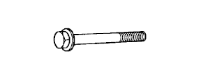
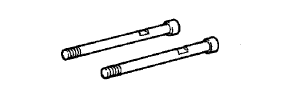

OIL PUMP > REMOVAL > Preparation

| 09213-54015 | Crankshaft Pulley Holding Tool | |
 | (91651-60855) | Bolt |
 | 09330-00021 | Companion Flange Holding Tool |
 | 09950-50013 | Puller C Set |
 | (09951-05010) | Hanger 150 |
 | (09952-05010) | Slide Arm |
 | (09953-05020) | Center Bolt 150 |
 | (09954-05030) | Claw No.3 |
| Drain hose | - |
| Feeler gauge | - |
| Oil pressure gauge | - |
| Precision straight edge | - |
| Engine Oil | Oil Viscosity(SAE) | ||
| Drain and refill | w/ Oil filter change | 5.2 liters (5.5 US qts, 4.6 Imp. qts) | 10W-30 (10W-30 is the best choice for good fuel economy and good starting in cold weather.) |
| w/o Oil filter change | 4.9 liters (5.2 US qts, 4.3 Imp. qts) | ||
| Dry fill | 6.0 liters (6.3 US qts, 5.3 Imp. qts) | ||
 | 09012-2C520 | Deep Socket Wrench 24mm | - |
 | 09082-00040 | TOYOTA Electrical Tester | - |
 | 09200-00010 | Engine Adjust Kit | - |
| Toyota Genuine Adhesive 1344, Three Bond 1344 or equivalent | - |
| Toyota Genuine Seal Packing 1282B, Three Bond 1282B or equivalent | - |
| Toyota Genuine Seal Packing Black, Three Bond 1207B or equivalent | - |